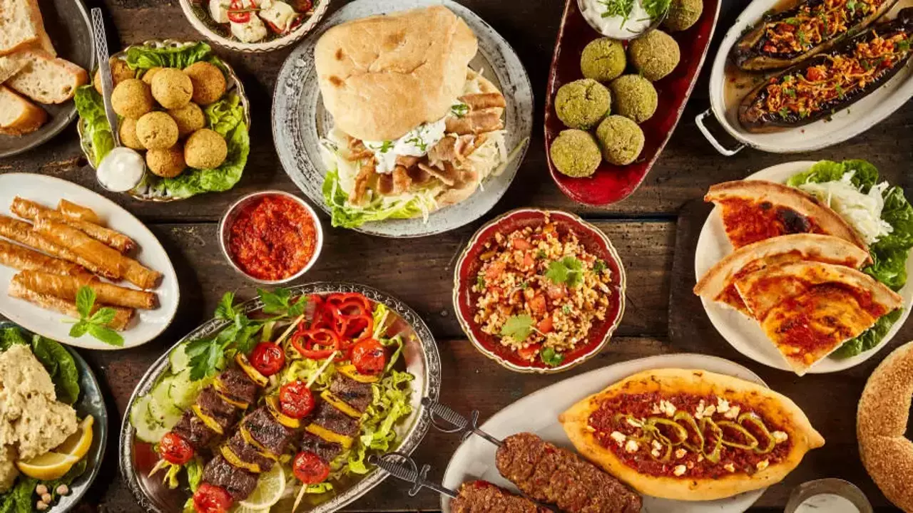
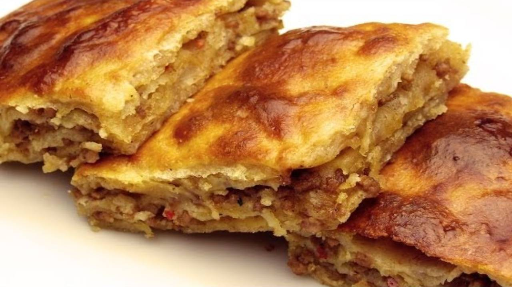
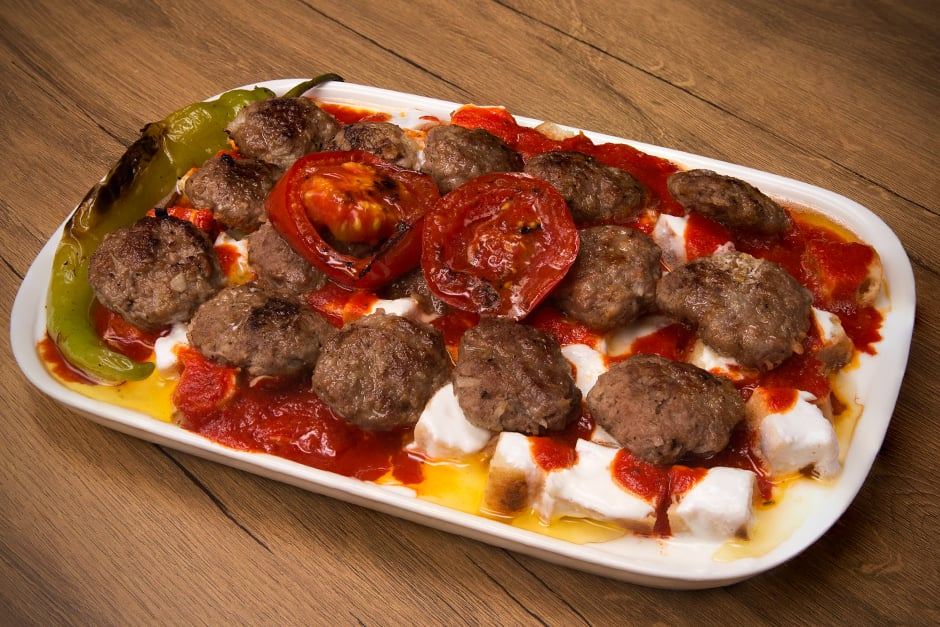
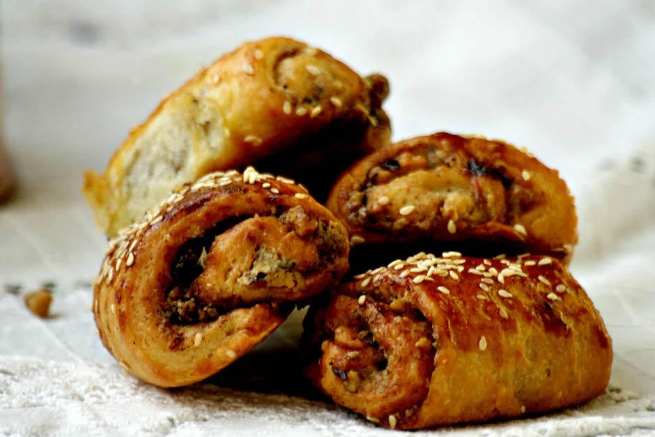
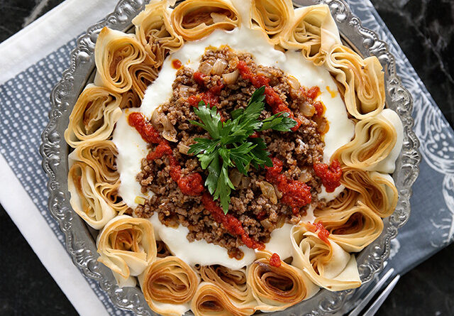
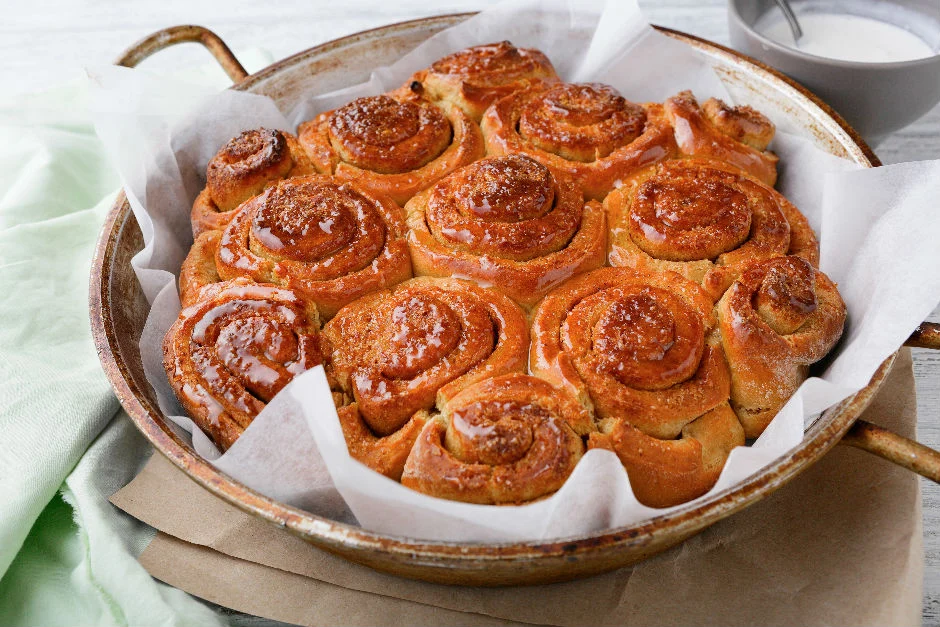
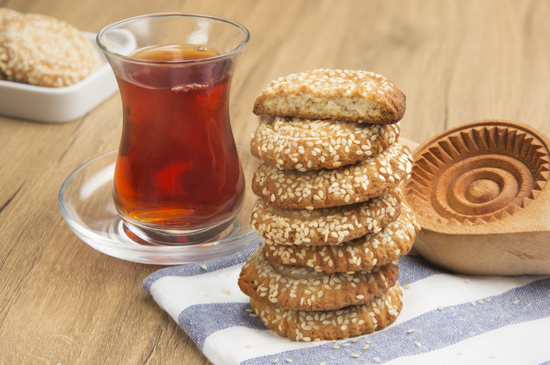
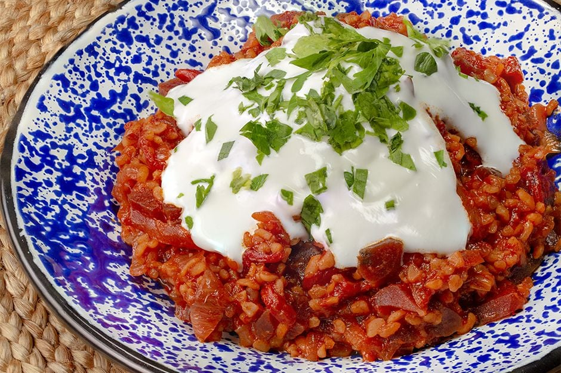

Yöresel Lezzetler

Yemek konusunda öyle şanslıyız ki, tam anlamıyla o klişe sözdeki gibi "anlatılmaz yaşanır" aslında. Ülkemizin
dörtbir yanından bambaşka ama her biri şahane yemekler fışkırıyor adeta.
Atıştırmalığından tatlısına, et ve sebze yemeğinden çorbasına her lezzetimiz ayrı bir efsane!
Ama ne yazık ki bazıları hala herkesçe bilinmiyor, şöyle çeşit çeşit kebaplarımız gibi her yerde karşımıza
çıkabilecek üne kavuşamıyor.Oysa hepsini tek tek keşfetmeli, hepsini mutfaklarımıza davet etmeliyiz.
Tam da bu yüzden sizin için az bilinen yöresel lezzetlerimizden bazılarını derledik, o çok özel tariflerini de bir
bir verdik. Bu tarifleri bir kenara not edin, her gün en az bir tanesini deneyin. Deneyince zaten hepsini çok
seveceksiniz, öyle eminiz ki :)
Kırklareli: Soğan Pidesi

Kırklareli mutfağından çıkan ve bir an önce tüm mutfaklara girmesi gereken bu lezzet, oralarda "muhacir böreği"
ismiyle de bilinen ve soğana bir kez daha teşekkür etme sebebi olan nefis bir hamur işi.
Kıymalı böreğin en sıkı rakibi: Soğan
Pidesi
Tarifi
Sayfanın Başına Git
Eskişehir'den Akşam Yemeğine Davetli: Balaban Kebabı

Eskişehir'e en az bir kez yolu düşmüş olanlar bilir, balaban kebabı bu şehirle özdeşleşmiş efsane bir lezzettir.
Her canınız istediğinde kalkıp Eskişehir'e gidemeyeceğinize göre, onu evde nasıl yapabileceğinizi öğrenmeniz
gerekir.
O zaman sizi hemen böyle alalım: Balaban Kebabı
Tarifi
Sayfanın Başına Git
Yoksa Siz Hala Onunla Tanışmadınız mı: Nokul

Sinop'tan Isparta'ya, birçok farklı şehrimizde ufak tefek değişikliklerle de olsa kendine yer bulan bir lezzet
nokul. İçinde tahinden gül suyuna çeşit çeşit lezzet saklı, bugüne dek yaptığınız tüm hamur işlerinden çok ama çok
farklı.
Siz malzemeleri hazır edin, gerisini el birliğiyle hallederiz:
Nokul Tarifi
Sayfanın Başına Git
Bir Karadeniz Güzeli: Siron

Karadeniz mutfağının en özel ama en az bilinen tatlarından biri siron. Zilon, sirin gibi farklı isimlerle de
anılabiliyor, her ne denirse densin lezzetinden asla ödün vermiyor.
Bu nasıl bir lezzeti, bu nasıl bir güzellik:
Siron Tarifi
Sayfanın Başına Git
Usulü Kütahya'dan: Haşhaşlı Lokum

Klasik haşhaşlı çörekleri aratmayan, hatta ufak farklılıklarla onlardan ayrılıp favorileriniz arasında en üst
sırada kendine yer bulacak olan yöresel bir lezzet o.
"Denenecekler" listenizde hemen yerini almalı:
Haşhaşlı Lokum Tarifi
Sayfanın Başına Git
Baharat Şöleni: Kömbe Kurabiye

"Bir kurabiyeye en fazla kaç eşit baharat konulabilir ki?" demeden önce Hatay'ın hepimize armağanı kömbe ile
tanışın deriz.
Tarifini görünce ne demek istediğimizi anlayacaksınız zaten:
Kömbe Kurabiye Tarifi
Sayfanın Başına Git
Yozgat'tan Şaşırtan Lezzet: Pezzik Cacığı

Daha önce adını duymayanlar için oldukça şaşırtıcı bir isme sahip bu lezzetin tek ilginçliği ismi de değil
üstelik. Klasik cacıktan çok daha farklı, pancarla hazırlanan pezzik cacığı, bir meze olarak sofranızı
zenginleştirmeye kararlı.
Bu sıra dışı lezzetle tanışın:
Pezzik Cacığı Tarifi
Sayfanın Başına Git